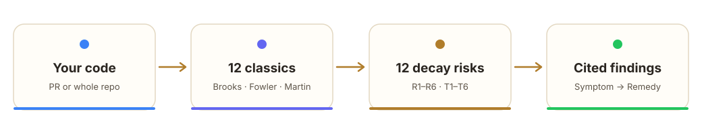
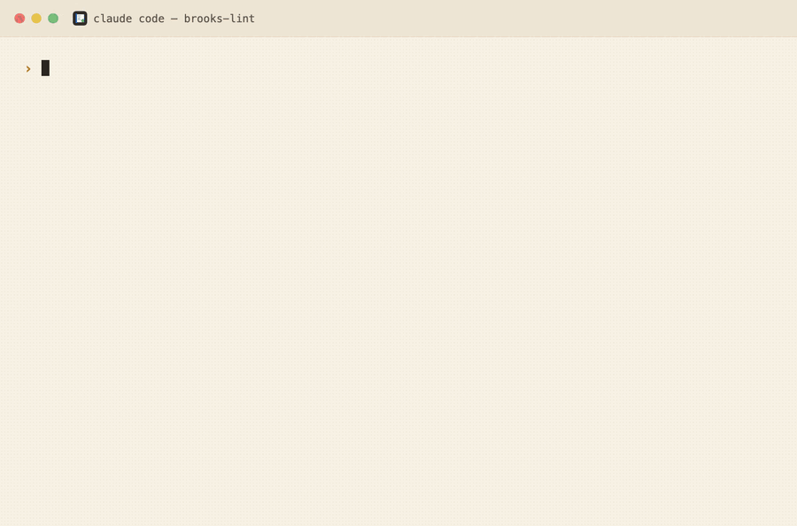

AI code reviews grounded in twelve classic engineering books
Most tools count lines and complexity. brooks-lint diagnoses your code against twelve decay risks synthesized from the classics — every finding cited, scored, and remedied.
“The bearing of a child takes nine months, no matter how many women are assigned.” — Frederick Brooks, The Mythical Man-Month (1975)


Not a linter. A second opinion from the canon.
Linters catch syntax. brooks-lint catches architectural drift, knowledge silos, and domain distortion — the slow problems that cost teams months.
The Iron Law
Every finding follows one shape: Symptom → Source → Consequence → Remedy. No vague vibes, ever.
Cited to the books
Brooks, Fowler, Martin, Ousterhout, Evans, Feathers, Meszaros and more — each finding names the author and principle.
Six focused skills
PR Review, Architecture Audit, Tech Debt, Test Quality, Health Dashboard, and a Full Sweep that auto-fixes.
Zero config, any language
Works in Claude Code, Codex CLI, and Gemini CLI. No plugins to wire up, no language limits.
The Six Production Decay Risks
Synthesized from the twelve books. Six more (T1–T6) cover test-suite decay.
🧠 Cognitive Overload
How much mental effort does it take to understand this?
🔗 Change Propagation
How many unrelated things break on one change?
📋 Knowledge Duplication
Is the same decision expressed in multiple places?
🌀 Accidental Complexity
Is the code more complex than the problem itself?
🏗️ Dependency Disorder
Do dependencies flow in a consistent direction?
🗺️ Domain Model Distortion
Does the code faithfully represent the domain?
What a finding looks like
Same messy method, two of the eight findings brooks-lint produces — each one cited and actionable.
🔴 R2 — One method changes for four unrelated reasons
🔴 R6 — Silent logic bug: notification never fires
Consistency is the point
Tested across PR review, architecture audit, and tech debt scenarios. The gap isn't what Claude can find — it's what it finds every single time, with evidence.
| Criterion | brooks-lint | Claude alone |
|---|---|---|
| Structured Symptom→Source→Consequence→Remedy | 100% | 0% |
| Book citation per finding | 100% | 0% |
| Consistent severity labels 🔴🟡🟢 | 100% | 0% |
| Health Score (0–100) | 100% | 0% |
| Overall pass rate | 94% | 16% |
Standing on twelve giants
The decay risks are our synthesis of their ideas, applied to modern code quality.
Get started in seconds
Pick your tool. Then just ask it to review your code, audit your architecture, or assess tech debt.